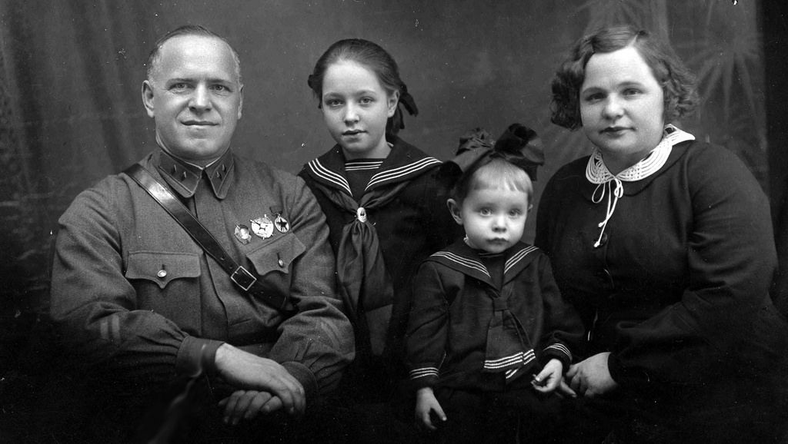

Жуков родился в бедной крестьянской семье в деревне Стрелковка (ныне Калужская область). Его родители занимались сельским хозяйством, но из-за малоземелья семья часто испытывала материальные трудности.
В детстве Георгий помогал родителям: пас скот, работал в поле и даже подрабатывал сапожником. Это научило его трудолюбию и терпению.
Из-за бедственного положения семьи он был вынужден оставить школу после трёх классов и устроиться учеником сапожника в Москву.
В 1915 году, в возрасте 19 лет, Жуков был призван в армию Российской империи. Он служил в кавалерийском полку, где проявил себя как храбрый и решительный солдат.
За участие в боях против австро-венгерских войск он был награждён двумя Георгиевскими крестами — высшей наградой для рядовых солдат того времени.
После Октябрьской революции 1917 года Жуков вступил в ряды Красной Армии. Он участвовал в боях против белогвардейцев и интервентов.
Во время Гражданской войны он командовал кавалерийским эскадроном и показал себя как талантливый организатор и стратег.
За свою боевую деятельность Жуков был награжден шестью орденами Ленина, тремя орденами Красного Знамени, двумя орденами «Победа», двумя орденами Суворова 1-й степени, орденом Октябрьской революции, множеством медалей и более 20 иностранных орденов.
После смерти своей второй жены Галины Александровны 13 ноября 1973 года здоровье маршала сильно ухудшилось: вскоре у него случился инфаркт и он впал в кому. 18 июня 1974 года прославленный полководец скончался в больнице на 78-м году жизни. Урна с его прахом была торжественно захоронена в Кремлевской стене.